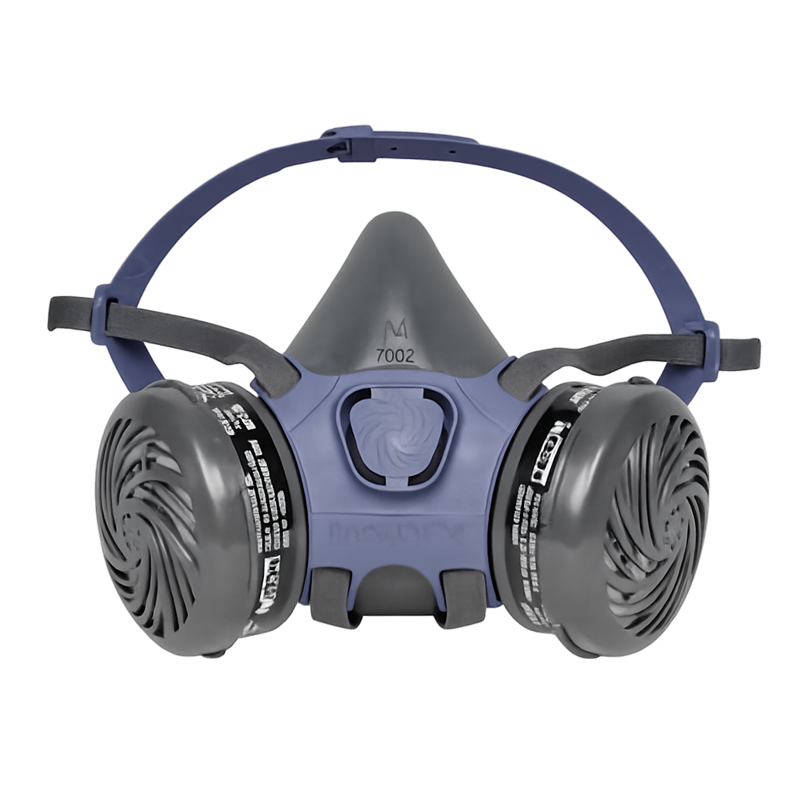

Protecting miners’ lungs from dust and harmful particles
Тоос, хорт бодисоос уурхайчдын уушгийг хамгаална

Respirators are essential for underground miners, filtering out dust, fumes, and harmful airborne particles that can damage the lungs.
They ensure safe breathing in hazardous environments and reduce the risk of long-term respiratory diseases.
Далд уурхайн ажилчдын хувьд амьсгал хамгаалах хэрэгсэл нь тоос, утаа, хорт бодисын жижиг ширхэгийг шүүж уушги хамгаалах чухал хэрэгсэл юм.
Аюултай орчинд аюулгүй амьсгалах боломж бүрдүүлж, урт хугацаандаа амьсгалын замын өвчин тусахаас сэргийлдэг.
Removes harmful dust particles from inhaled air.
Амьсгалж буй агаараас хүний эрүүл мэндэд сөрөг нөлөөтэй тоосонцорыг шүүнэ.
Ensures continued protection with easy maintenance.
Байнгын хамгаалалт, хялбар арчилгаа.
Designed for long shifts underground.
Далд уурхайд удаан хугацаанд хэрэглэхэд тохиромжтой.
Meets international safety standards.
Олон улсын аюулгүй ажиллагааны стандартыг хангасан.
1. What is the main purpose of a respirator?
To provide light
To filter dust and harmful particles
To protect feet
2. Why are replaceable filters important?
They improve helmet fit
They allow continued protection with maintenance
They make respirators waterproof
3. What health risk do respirators help prevent?
Broken bones
Long-term respiratory diseases
Hearing loss